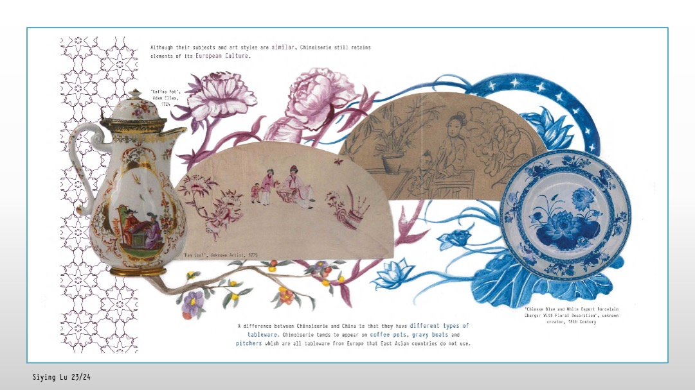
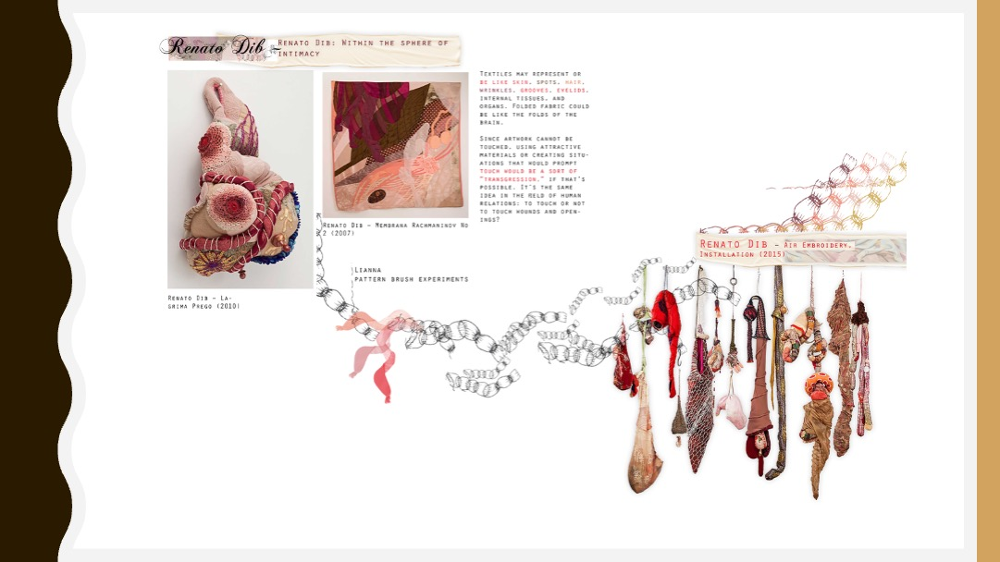
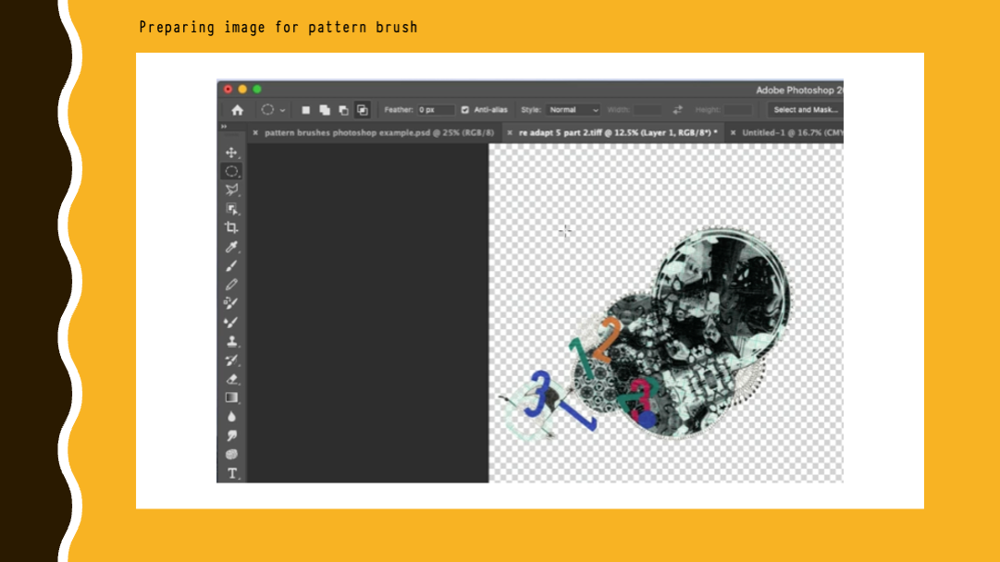
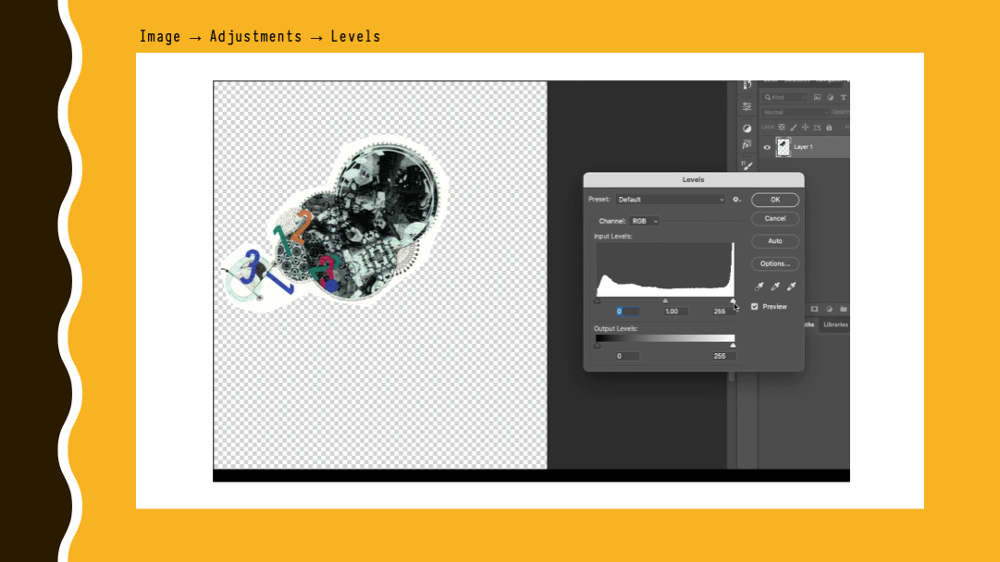
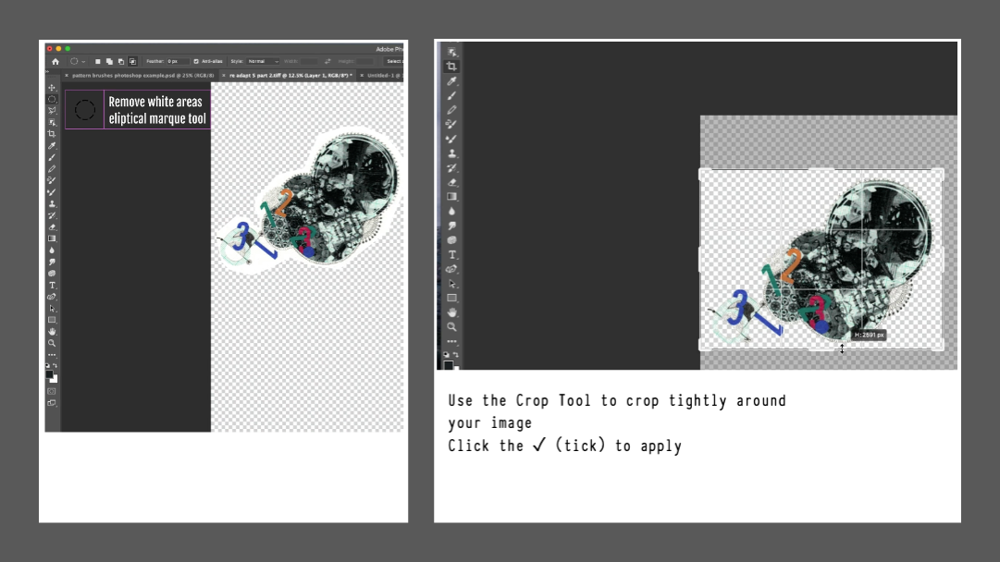
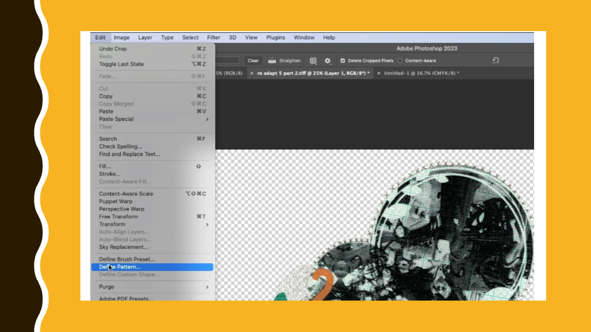
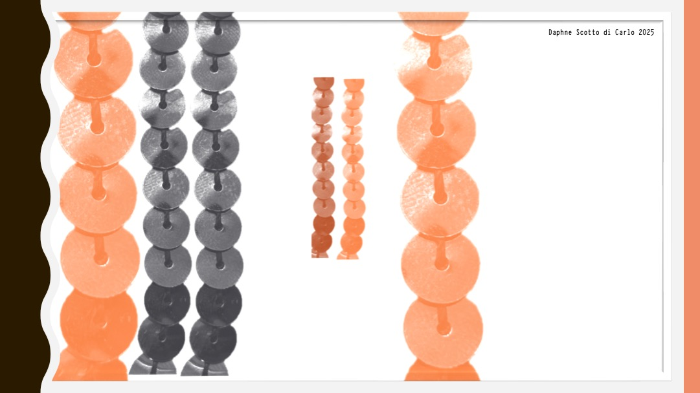
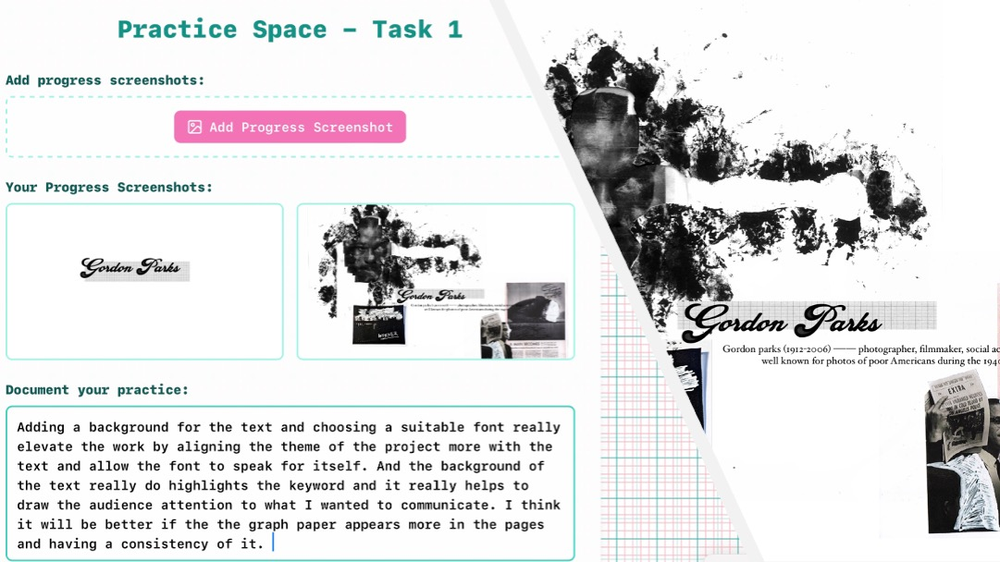

Make Pattern Brushes from Your Drawings & Collages

You Will Learn To:
- Make a pattern brush from your artwork
- Clean up images for patterns
- Apply patterns along paths
- Link images visually
- Improve your page layouts
📋 What You Need
- A drawing or collage that connects to your research
- Adobe Photoshop (desktop version)
Why Use Pattern Brushes?
Pattern brushes help you:
- Connect elements – link different parts of your page
- Add personality – use your own drawings
- Tell a story – guide the viewer's eye
- Make it unique – show your research theme
Important: Choose drawings that connect to your research. The pattern should help your design, not distract from it.
Example Research Pages
These pages show how artists' work can be explored and how pattern brushes can be used visually.
Research Page Examples with Pattern Brushes

Renato Dib: Within the Sphere of Intimacy
TASK 1: Make a Pattern Brush
Make a pattern brush from your drawing or collage.
Video: How to Make a Pattern Brush
Watch how to create and apply a pattern brush in Photoshop
Step-by-Step Guide In-Class
1
Open Your Drawing or Collage
- Open your image in Photoshop
- Cut out the part you want to use
- Copy and paste it onto a new layer
- Delete the background

2
Adjust Levels
- Go to Image → Adjustments → Levels
- Move the sliders to make the image clearer

3
Remove Unwanted Areas
- Use the Elliptical Marquee Tool to select white areas
- Go to Select → Similar, then press Delete
- Press Cmd + D (Mac) / Ctrl + D (Windows) to deselect
- Use the Crop Tool to crop tightly around your image
- Click the ✓ (tick) to apply

4
Define Your Pattern
- Make sure the correct layer is selected
- Go to Edit → Define Pattern
- Give your pattern a clear name
- Click OK
✅ Done!
Your pattern is now saved.

5
Use Your Pattern
- Open a design page (or a blank page to test)
- Use the Pen Tool to draw a path
- Create a new layer
- Go to Edit → Fill
- Choose Pattern and select your pattern
- Click OK
6
Try Different Options
- Change the size and spacing
- Try different paths (straight, curved)
- To remove the blue path line: open the Paths panel and delete the Work Path
💡 Take Your Time
Play and experiment. Good results come from trying different options.
Student Examples: Task 1
Pattern Brush Experiments

Pattern from hand-drawn elements
Task 1 Checklist
You Must Complete:
Prepared image with background removed
Adjusted contrast using Levels
Cleaned up and cropped image
Defined and named your pattern
Applied pattern to a test page
Tried different sizes and paths
TASK 2: Add to Your Design Pages
Add your pattern brush to a design page in Photoshop.
Page Requirements
📋 Design Development Pages Must Include:
- Research links that connect to your design ideas
- Clear subtitles (use a light monospaced font)
📋 Research Pages Should Include:
- Different types of research
- Clear subtitles
- Written notes showing your understanding
How to Use Pattern Brushes
- Connect related images
- Guide the viewer's eye
- Frame content areas
- Don't overcrowd the page
- Leave empty space
- Balance text and images
💡 Take Your Time
Play and experiment. Good results come from trying different options.
Student Examples: Task 2
Finished Design Pages
Pattern brush with research images
Visual links connecting elements
Task 2 Checklist
You Must Include:
Pattern brush on your design page
Visual links between elements
TASK 3: Save Your Progress
Document your work and write about what you learned.
Why Save Your Progress?
Documenting helps you:
- Show your work – tutors see how you improved
- Remember skills – useful for future projects
- Reflect – understand what worked well
How to Document
2
Add Screenshots
- Take screenshots as you work
- Upload them to the tool
3
Write Notes
- What did you learn?
- What was difficult?
- What worked well?
4
Screenshot Your Documentation
- Mac: Command + Shift + 3
- Windows: Windows + Shift + S
Student Examples: Task 3
Progress Documentation

Process with screenshots
Task 3 Checklist
You Must Include:
Screenshots of your process
Notes about what you learned
What was difficult and how you solved it
Final screenshot of documentation
Submit Your Work
Upload All Tasks to Padlet
1. Task 1
Pattern brush experiments
2. Task 2
Finished design page
3. Task 3
Progress documentation